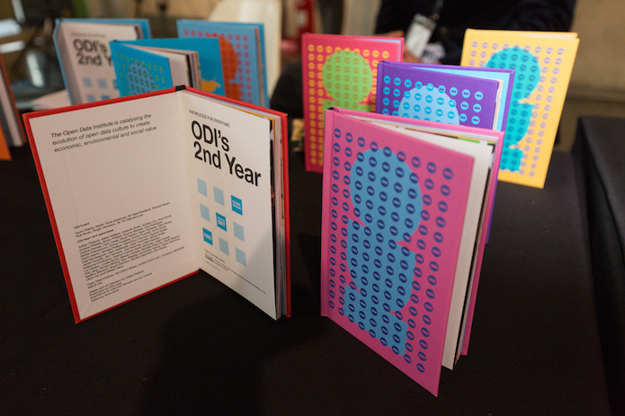

How we made the ODI’s award-winning annual report
Having picked up the award for best annual report with her team at the CorpComms ceremony last night, ODI Writer and Editor Anna Scott reflects on the ideas, creativity, people and trust that helped make it happen

A proud mum recently told us a wonderful story of her inquisitive eight-year-old, Mabel.
“I came downstairs this morning to find my daughter (almost 9) engrossed in your ODI annual report, the small hardback book. She said, 'Mummy is this like Figshare? It makes me want to switch on the computer and create something I can share.' She popped it in her school bag to finish reading at lunchtime.”
At the annual CorpComms awards last night, the ODI won best annual report for not-for-profit and public sector.
Our original brief from Gavin (our CEO) was relatively direct:
Please create a report that isn’t direct-to-landfill.
It’s true that annual reports are often never read beyond their top-line financial figures and executive summaries. We wanted to create something that was engaging for everyone, not just people in tech or people closely associated with the ODI. We wanted to emphasise the human elements of our work, featuring stories about how people use, produce and benefit from data in amongst our programme updates, and showcase action and impacts around open data throughout the report.
The original idea to create the report in the form of a little Ladybird-style book evolved out of the ODI’s rebranding process in 2013. As Adrian Philpott, the report’s designer, reflects: “We wanted to create a brand for the ODI that had the potential to engage everyone, from leaders in business and governments to teachers, children, parents and grandparents. The annual report is an extension of this brand vision. It’s unlike any typical corporate communications.”
Impact
Based on the feedback we’ve had on our Year 1 and Year 2 reports, we see the work that goes into them as a fantastic investment in helping people to engage with us from year to year. Bringing colour, form and content to what is essentially an invisible asset (data), copies sit on the desks and bookshelves of decision-makers in governments, businesses, nonprofits and our supporter community. We had to print our Year 1 report five times, and our Year 2 report print run delivered over 1,500 copies.
How we made it
Each of the Year 2 report covers is unique: developed by Adrian and our Labs team to interchange three design elements and generate more than 3,000 colour combinations.
The report adopts two contrasting illustrative styles, modern branded vectors and hand-painted watercolour illustrations, reflecting open data’s cultural impacts as well as its technical elements.
As the report’s editor, this was one of the most enjoyable projects I’ve ever worked on. From commissioning team members to draft sections to editing the final copy, it was great to tap into my colleagues’ excitement about their work and help channel it into something so engaging and vibrant.
I had only been at the ODI for a few months when I started working on the report, but there wasn’t much I didn’t know about the team, their work and open data’s potential by the time we sent it to print. Working closely with Phil Lang, our Digital Production Editor, on what he calls “the distillation of wild ideas into a fully formed representation of all the best parts of the ODI,” delivering to our brief was a labour of love. But getting input from the whole team, from business support to Gavin and our Co-Founders, Sirs Nigel Shadbolt and Tim Berners-Lee, was what made it so special.
Another important element was trust. While our leadership and board contributed to the report, they were not very prescriptive about its content. We were given a lot of freedom to experiment with formats and messaging, which I realise is fairly uncommon for an output this central to an organisation. In fact, we were told as much last night by others at the ceremony, many of whom said things along the lines of “wow, our CEO would never let us do that.”
In Gavin’s words: “As with everything at the ODI, we invest heavily in creating content that is relevant to its audience. This is a huge commitment in time, energy and money, but the reach, influence and impact of the reports have vastly exceeded our expectations. The team has done a fantastic job in creating a world-class asset that helps to carry the brand and values of the ODI worldwide, equipping people, like Mabel, with knowledge that inspires them to innovate with data.”
There’s a lot to write about for this year’s report. Our team has grown and new members, startups and nodes have joined our global network. We’ve started new programmes, been to new countries, met new people and heard inspiring new stories about open data. So keep an eye out for ODI Year 3, early next year. And if you’re wondering exactly what form it’ll take, you’re in good company, because at the moment so are we.
Anna Scott is Writer / Editor at the ODI. Follow @AnnaDScott on Twitter.
If you have ideas or experience in open data that you'd like to share, pitch us a blog or tweet us at @ODIHQ.